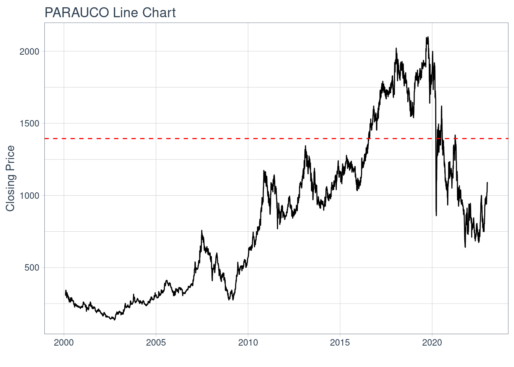
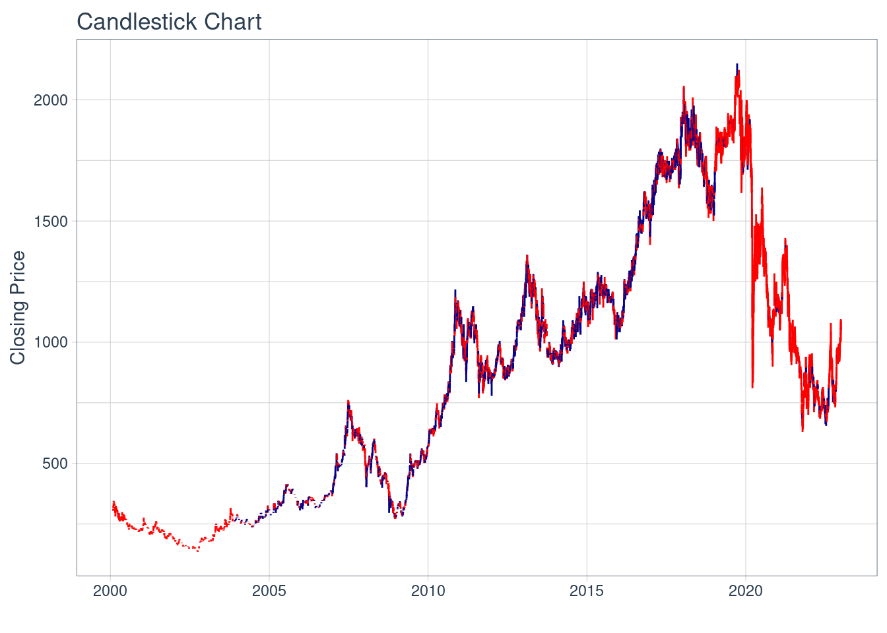
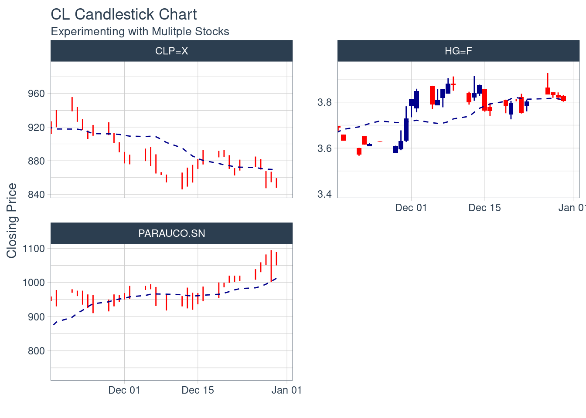

Plantilla Proyecto
Descripción Activo y Contexto (Hito 1)
Fecha de entrega: Jueves 28 de Septiembre 23:59.
Definición
Parque Arauco S.A, es una empresa inmobiliaria chilena que está centrada principalmente en la explotación de centros comerciales, contando con 5 centros comerciales “Mall Arauco” en distintas comunas de Santiago, Chile. Además, tiene 4 centros comerciales distribuidos en otras ciudades del país. Esta empresa pertenece al principal indice bursatil de Chile, llamado IPSA, por lo que está dentro de las 30 acciones con mayor presencia bursatil, lo que la convierte en una de las empresas más importantes a nivel país.
El paper “Neoliberal Lakeside Residentialism: Real Estate Developmente and the Sustainable Utopia in Environmentally Fragile Areas” habla del desarrollo inmobiliario junto al lago, lo que nos dice como a evolucionado la comercializacion en ambientes fragiles para la construccion de residencias, creando una especie de “utopia verde” para los residentes pero lo que a la vez perjudica a la sostenibilidad ambiental y a las areas de turismo, ya que estas son cerradas por las construcciones. Esto termina dañando el territorio ambiental y social por lo que se deberian realizar regulaciones para conservar el ambiente y cultura.
fuente: https://www.webofscience.com/wos/woscc/full-record/WOS:000845786900001

Motivación
Parque Arauco S.A al ser una empresa inmobiliaria y estar dentro del IPSA, la convierte en una empresa bastante importante a nivel nacional, además al estar centrada en la explotación de centros comerciales contribuye considerablemente al consumo y economia local.
Esta empresa tambien tiene presencia a nivel internacional, especificamente en Colombia desde 2008 y en Perú desde 2005.
En el ultimo pais mencionado, la empresa invertirá cerca de 109 millones de dolares en 3 proyectos, los que abarcan; un edificio multifamiliar en el distrito de Miraflores, un nuevo centro comercial llamado “Parque La Molina” en el distrito de La Molina y una ampliación para el centro comercial “MegaPlaza Independencia”, este es el mas grande en Perú.
Por lo dicho anteriomente se puede notar que Parque Arauco S.A, además de ser importante a nivel nacional, tambien lo es a nivel internacional, en donde está construyendo espacios para las personas, tanto a nivel comercial como familiar. Tambien se puede observar que es una empresa que se sigue expandiendo en los paises donde se encuentra. Por lo tanto es un sector bastente importante que motiva la estudio.
Contexto
El activo principal es Parque Arauco S.A (PARAUCO.SN) y las dos variables son el dolar estadounidense versus el peso chileno (CLP=X) y el cobre valorado en usd (HG=F), estas variables estan relacionadas con el activo principal ya que la empresa hace inversiones denominadas en dolares estadounidenses por lo que es importante saber el precio del dolar estadounidense versus el peso chileno, al ser esta una empresa chilena, por otro lado el cobre se utiliza en las construcciones de edificios para el cableado, tuberias de agua o gas, sistemas termicos, etc.

Análisis de Largo Plazo
Caracterización deuda (Aplicación cap. 15)

No se logró encontrar el desglose de activos de Parque Arauco S.A. Observando el estado de activos proporcionado en el estado de resultados de la empresa, se aprecia que desde diciembre de 2022 se ha aumentado aproximadamente en 150.000 millones de pesos chilenos, teniendo para junio de 2023 cerca de 3.100.000 millones de pesos chilenos en activos.

Por otro lado, observando los indicadores financieros se ve que la deuda financiera de la empresa ha aumentado en el segundo trimestre de este año comparado al mismo periodo del año pasado, un factor a considerar es que la empresa puesto en marcha distintos proyectos que necesitan bastante presupuesto, como lo son la construccion de un edificio multifamiliar, un shopping nuevo en Perú y una ampliación en otro loca del mismo país.
Las acciones de la empresa son ordinarias y el controlador de esta es Inmobiliaria Atlantis S.A que cuenta con una participación del 25.83% del total de acciones emitidas, siendo estas 212.503.700
En bonos se tienen diversas lineas y series, de acuerdo al prospecto de bonos corporativos publicado en la CMF en 2020, se agregan las series “Y”, “Z” y “AA”, con clasificaciones de riesgo AA en todas las series por parte de las clasificadoras de riesgo limitada Feller Rate e ICR, por lo que se puede considerar una empresa confiable. Además, segun la noticia del diario financiero, este año Parque Arauco S.A emitirá bonos por UF 3 millones con vencimiento en 2044.
Caracterización de emisiones históricas (Aplicación cap. 20)
El prospecto emision de acciones de Parque Arauco S.A publicado por la comision para el mercado financiero (CMF) publicado el 11 de febrero del 2016 dice que, el numero de acciones suscritas y pagas es de 819.464.670, donde el capital se divide en acciones ordinarias y no hay series de acciones. El 30 de noviembre del 2015 se publica la emision de 78.000.000 acciones, el 10% de estas serán destinadas a planes de compesacion para ejecutivos de Parque Arauco S.A y de sus filiales, el tipo de colocacion será por intermediarios y los colocadores serán Banchile Corredores de Bolsa S.A e Itau BBA Corredor de Bolsa Limitada, sin plazo de colocacion.
Esto difiere del procedimiento basico descrito en el capitulo 20 del libro ya que no es tan especifico en cuanto a los pasos realizados para la colocacion, sobre todo en el ultimo paso ya que el prospecto no especifica el precio de la compra/venta en el mercado.
%2019.49.13.png)
Relación con activos derivados
Un activo derivado es el de Cencosud ya que Parque Arauco S.A tiene contratos a largo plazo con arrendatarios y tiendas anclas fijas con alta calidad crediticia. En los centros comerciales de Parque Arauco S.A podemos encontrar Paris, retail perteneciente a Cencosud.
fuente:https://icrchile.cl/wp-content/uploads/2023/04/6552s-1.pdf
En el siguiente graficos podemos ver los precios de los dos activos, la linea azul pertenece a Parque Arauco S.A y la negra a Cencosud.

Se puede observar que existe una relacion entre estos dos activos, en especial en la zona del rectangulo que corresponde a los ultimos 5 años, en donde la relacion es mucho mas fuerte que en periodos anteriores.
Reporte grupal
Las ponderaciones son las siguientes: 50% banco, 35% energia y 15% inmobiliaria
Escogimos esta distribución ya que actualmente, con las altas tasas de interés, producto de la inflación, los bancos han generado un mayor retorno, lo cual incrementa el ingreso que han ganado y por ende tienen más dinero para realizar inversiones, lo que puede provocar un aumento en su precio de acción. Es debido a esto que le otorgamos un 50% de peso al banco, ya que es la entidad que más retornos nos va a producir. Para poder diversificar el portafolio, le colocamos un 35% al sector de energía, ya que es un sector “neutro”, al cual no le ha ido bien ni mal, sin embargo es un sector de commoditie, por lo cual es usado por toda la población y por ende, su aumento o disminución en el precio no es muy notable. Finalmente, otorgamos un 15% al sector inmobiliario, ya que actualmente es un sector que ha sido muy repercutido por la inflación y las altas tasas de interés, lo que produjo que su precio de acción disminuyera bastante. Creemos que esta tendencia seguirá, por lo que le otorgamos un menor peso en el portafolio.